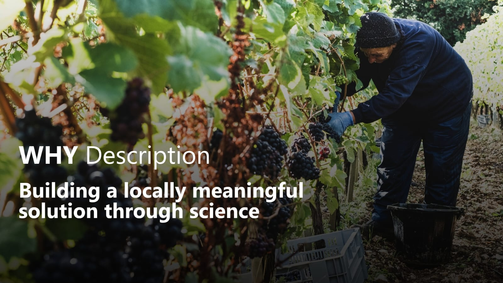

Agro é pop, agro é tech, agro é tudo
“Agro is pop, agro is tech, agro is everything”
Nationwide advertising campaign by Globo TV

Agriculture in southern Brazil
Our home state, Rio Grande do Sul, has a strong agricultural economy, with the sector accounting for 40% of the state's GDP. Its leadership in soybean and rice production is largely driven by the unique Pampa biome, whose vast flat grasslands provide ideal conditions for large-scale agriculture

The vineyard culture
Introduced by Italian immigrants, viticulture became part of Rio Grande do Sul's culture and is sustained by more than 15,000 family farms. Today, grapes are the state's 6th most important crop, generating R$2.29 billion annually, and accounting for 52% of Brazil's grape production (country's leading producer).

2,4D drift: an economic conflict
Despite the shared importance of grain production and viticulture to the state's economy, these sectors are coming into conflict. While 2,4-D has become an effective tool for weed control in soybean cultivation, its high susceptibility to drift can affect neighboring vineyards, causing significant economic losses.
Main
open
conflicts
How could science help?
“A practical and fast biosensor would already be a major advance in controlling 2,4-D drift.”

Professor Aldo Merotto Junior
Full Professor at the Department of Field Crops, Federal University of Rio Grande do Sul (UFRGS)
“A biosensor would be a valuable tool for monitoring and decision-making in real-world agricultural settings.”

Mateus Wanderer
Agronomist at the Jaguari Municipal Government
Mission & Values

Farmer-centered design
Every component of 2,4Detector was developed with usability, affordability, and accessibility in mind, ensuring that the technology can be adopted by the people who need it most.

Fast, accurate, and accessible detection
We optimized the biological system to deliver reliable results while keeping the assay rapid, low-cost, and suitable for field deployment.

Science with local impact
Our goal extends beyond detecting 2,4-D. We aim to empower communities by transforming synthetic biology into a practical tool that supports informed decision-making and collective responsibility.

Interdisciplinary innovation
2,4Detector was built by a multidisciplinary, women-led team, bringing together expertise from biotechnology, engineering, design, software development, and human-centered communication.

Knowledge as part of the solution
Technology alone is not enough. By combining biosensing with education, outreach, and community engagement, we seek to promote a culture of responsible herbicide use and strengthen dialogue among all stakeholders.